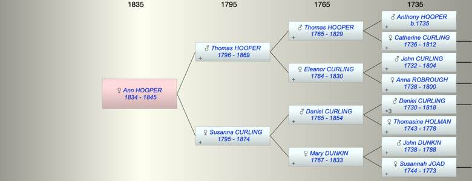

| [Index] |
| Ann HOOPER (1834 - 1845) |
|  |
| b. 1834 at St Laurence |
| d. 1845 at St Laurence aged 11 |
| Parents: |
| Thomas HOOPER (1796 - 1869) |
| Susanna CURLING (1795 - 1874) |
| Events in Ann HOOPER (1834 - 1845)'s life | |||||
| Date | Age | Event | Place | Notes | Src |
| 1834 | Ann HOOPER was born | St Laurence | Note 1 | ||
| 1845 | 11 | Ann HOOPER died | St Laurence | Note 2 | |
| Note 1: bap 8 Jun 1834 St Laurence ex FS |
| Note 2: buried 8 Oct 1845 St Laurence aged 11 ex FMP PR |
| Created on a Mac™ using iFamily for Mac™ on 8 Oct 2023 |